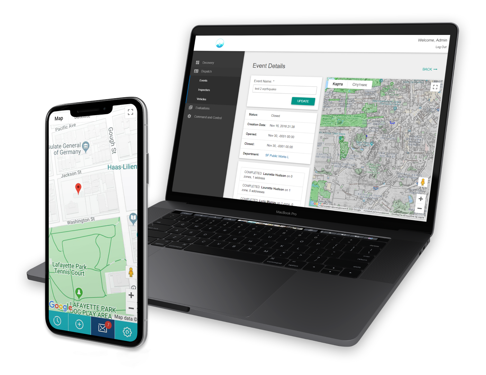

Decovery provides fast disaster recovery
Decovery is a FREE mobile application and website for pre and post natural disaster building safety screening built by Spiral Scout. Decovery's pre-natural disaster application is used by field inspectors to quickly compile an electronic inventory of city buildings and structures, record important information about a building (pre and post natural disaster), and generate reports in real time for city officials about the buildings and areas that have been evaluated.
Decovery is short for Disaster Recovery.
